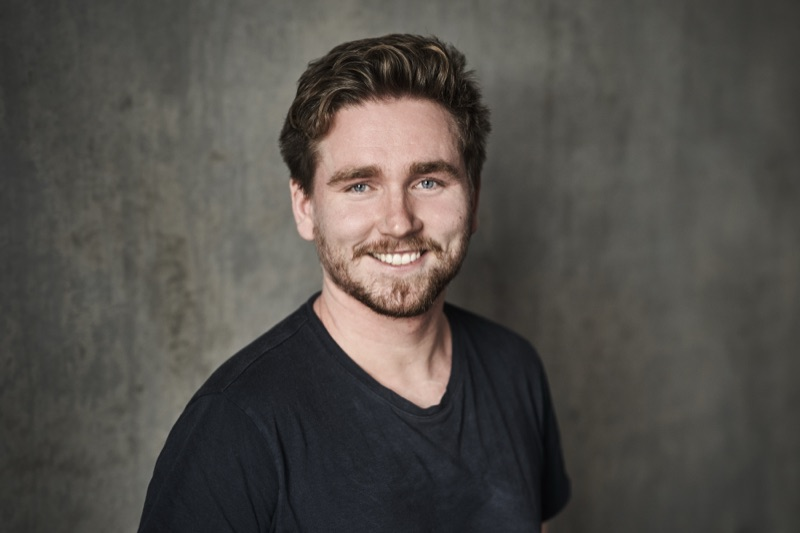

Svenn-Helge Vatne
Founder & CEO, Factsplat (Metaito AS)
I build AI systems in production.
vatne@metaito.com · Oslo, Norway · factsplat.com · LinkedIn

Profile
Technical founder. Seven years on Factsplat, built with a co-founder and a team of 3–5. Solo since 2024, with heavy use of AI in development. The platform has 8,500+ registered users, 100+ paying customers across three revenue channels, and a triple-database production stack (PostgreSQL, Neo4j, Solr). Shipped an AI assistant with Model Context Protocol (MCP) integration in March 2026, available to all paying users.
Equally comfortable writing Elixir, debugging Kubernetes, designing OAuth 2.1 flows, and selling. Use Claude Code daily, and operate an autonomous agent that runs continuous sales and development work.
Taking selective consulting engagements alongside Factsplat. Engagements range from rapid technical assessment ("can we build X?") and prototyping to test whether something is worth building, to finished implementation or ongoing advisory through the full process, including at the organizational level. Keep startup pace, including inside larger organizations.
Experience
Founder & CEO, Metaito AS / Factsplat
Built Factsplat into a real-time collaboration platform with 8,500+ registered users and 100+ paying customers across three revenue channels (Stripe, Apple App Store, organization invoicing).
- Shipped production AI assistant (March 2026) with MCP integration, model-provider routing (Anthropic + OpenAI), GDPR-compliant consent layer, and per-tier usage budgets. Runs on web and iOS.
- Designed and operate Pam, an autonomous Claude Code agent running continuously on dedicated Raspberry Pi hardware. Picks up tasks from a Kanban board, builds pull requests, runs code reviews, and self-heals when something breaks. In practice: a team of developers running around the clock under my supervision. Agents never merge code themselves; I quality-check everything that's done.
- Triple-database architecture in production: PostgreSQL (relational), Neo4j (graph permissions), Apache Solr (search). Real-time collaboration via Phoenix Channels and websockets.
- Mobile apps built with Capacitor (iOS). iOS approved on the App Store March 2026.
- Customers include Sticos, Nortek, InnoCamp, plus paying users via Stripe and the App Store. Validated the "cockpit" model: leader builds the workspace, employee works in it.
- Led a team of 3–5 with responsibility across product, engineering, design, sales, marketing, and growth over multiple years.
- Funded by private investors and through grant and loan programs from Innovation Norway and Stiftelsen Dam.
- Tech I work in daily: Elixir/Phoenix, Vue 3/Nuxt 3, Kubernetes, OAuth 2.1, Stripe, Mailgun, Neo4j, Postgres, Solr, Capacitor, Apple IAP.
- AI tools and APIs in daily use: Claude Code, Codex, Cursor, plus APIs from Anthropic, OpenAI, and Google.
System Developer, Helse Midt-Norge IT
Built a web application for surgery planning. Project-based engagement alongside studies.
Technician, Nordix Data AS
Field technician during fiber and network rollout in Northern Norway.
Earlier Ventures & Freelance, During Studies
- Founded Cretro DA, the legal vehicle through which I delivered two commercial websites for external clients.
- Co-published Inflat3d, an iOS game built around Apple's 3D Touch input (~2016).
Leadership, NTNUI Friidrett (NTNU Student Athletics)
Five years in the leadership of NTNUI Friidrett, three terms as Leder (President). Awarded Ridder av NTNUIs Orden for sustained contribution. Also served on a privacy committee and on the election committee for NTNUI's main board. Awarded Studentidrettsprisen Sør-Trøndelag (2017) for leadership work.
Selected Engagements & Speaking
- Customer / Product Owner for 5–6 student team projects at NTNU, including TDT4290 Customer-Driven Software Development and informatics bachelor projects, across multiple years.
- Project lead on two Stiftelsen Dam-funded collaborations:
- With Seniornett Norge (2023–2024): Startside på internett for enkel tilgang til web- og helsetjenester for eldre. A personalized homepage helping elderly users access digital and health services.
- With Stiftelsen Livsglede for Eldre (2024–2026): Ressursbank for å hjelpe eldre med teknologi og helsetjenester. A resource bank supporting elderly users with technology and health services.
- Delivered courses and workshops to participants as part of both engagements.
- Speaker, Dataforeningen Trondheim breakfast meeting (April 2023): "Smidighet med hjemmekontor, spredte team og nye digitale verktøy" (Agile working with home office, distributed teams, and new digital tools). Co-presented with Robin Sporstøl Koien (Evetro / Equinor).
- Pitch and conference experience as Founder of Factsplat across investor, customer, and university audiences.
Selected Publication
Abelsen, S. N., Vatne, S. H., Mikalef, P., & Choudrie, J. (2023). Digital working during the COVID-19 pandemic: how task-technology fit improves work performance and lessens feelings of loneliness. Information Technology & People, 36(5), 2063–2087. DOI: 10.1108/ITP-12-2020-0870. 113 citations.
Education
Norwegian University of Science and Technology (NTNU), Computer Science, 2014–2020
- Master's thesis delivered and published (basis for the 2023 Information Technology & People publication)
- One course remaining (Mathematics 4), planned for completion in 2026
Universidad Carlos III de Madrid, Erasmus exchange, Computer Engineering, 2018
- Two security courses completed: applied cryptography; security architecture, governance, and ISO frameworks
Awards
- SMN Talentpris (SpareBank 1 SMN, 2022) — for work with Metaito / Factsplat
- Ridder av NTNUIs Orden (NTNUI, 2019)
- Studentidrettsprisen Sør-Trøndelag (2017)
Languages
Norwegian (native) · English (fluent) · Spanish (conversational)